Grands travaux · 2026

145 entreprises · 156 articles · 10 magazines
Les chantiers présentés par l’OFROU
Interview mit Linus Looser, Mitglied der Konzernleitung und Leiter SBB Infrastruktur
Reportage photo bilingue
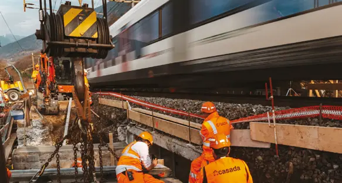
PublireportageEntreprise générale du bâtiment et du génie civil
Produits biosourcés, procédés décarbonés et circuits courts
Fibre optique pour les autoroutes romandes
Pionnière des travaux acrobatiques sur corde
Radon, substances nocives, sites contaminés et énergie
Nouvelle organisation et « radiologie de la route »
Des généralistes de l’environnement sur les chantiers romands
 Publireportage
PublireportageBuilding is a gesture, keeping it together an art
A Grono, la tradizione incontra l’innovazione (italien, français, allemand)
Entreprise générale de construction à Lugano
Assainissement et curage en Valais central
Bâtiment, génie civil et ouvrages d’art dans le Jura
Recyclage, ciment vert et proximité
Le pari de l’argile calcinée
Ein Service von hoher Qualität
Géotechnique, hydrogéologie et polluants
Dalle prime strade in bitume al gruppo edile del futuro
Trois générations d’ingénierie civile à Lugano
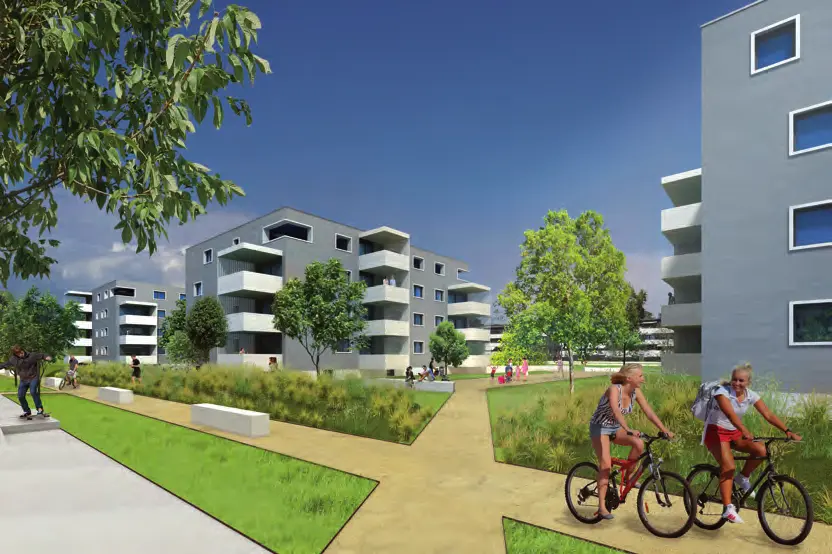
Publireportage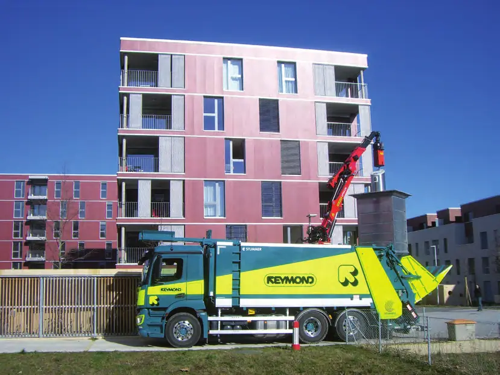
Publireportage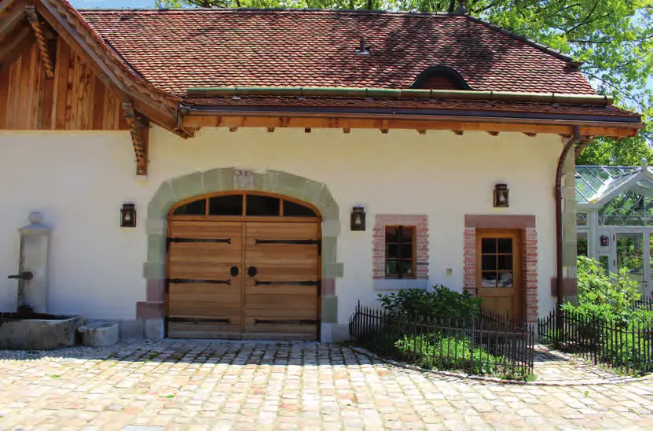
Publireportage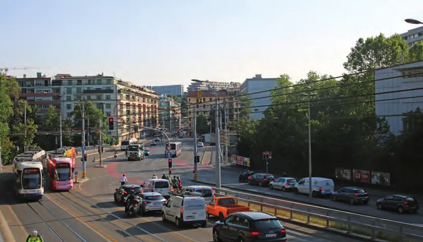
Publireportage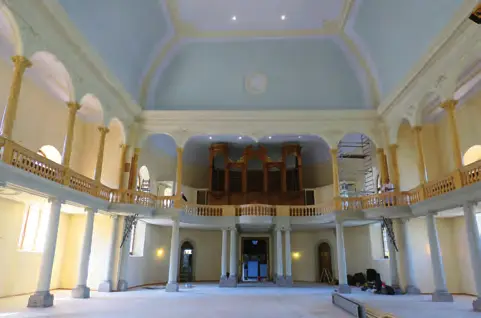
Publireportage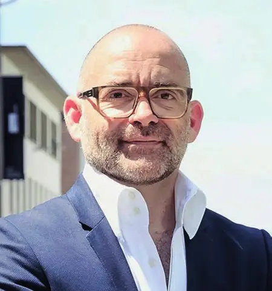
InterviewInterview de Monsieur Laurent Caillère, président d’Energies Nouvelles Fribourg
 Publireportage
PublireportagePublireportage
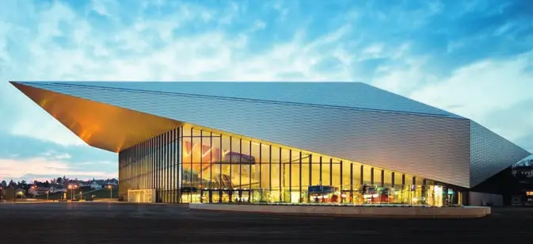
PublireportageIntelligentes Elektrizitätsmanagement (français et allemand)
 Publireportage
PublireportageContrôle indépendant des installations électriques
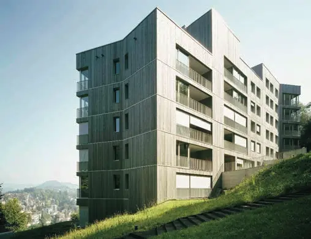
InterviewInterview de M. Jean-Pascal Gendre, CEO
 Publireportage
PublireportagePublireportage
 Publireportage
PublireportagePublireportage
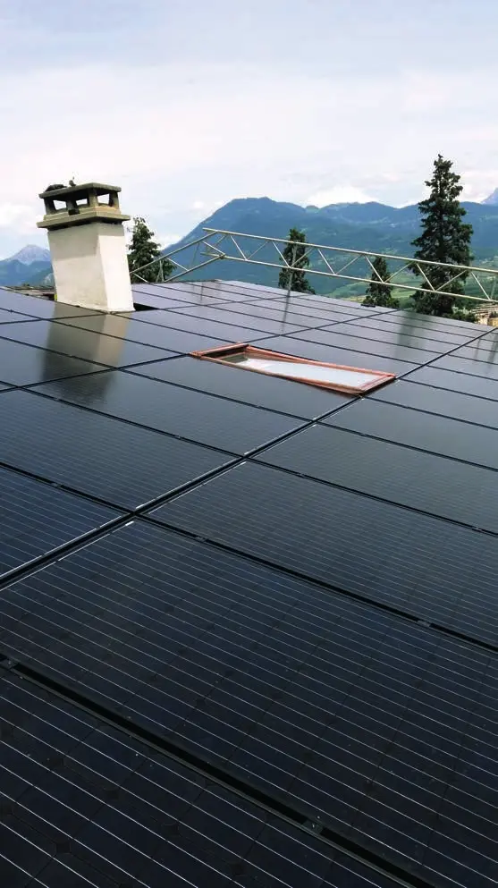
PublireportagePublireportage
Publireportage
Company profile
Company profile
 Publireportage
PublireportageCompany profile
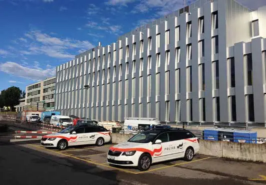
PublireportageCompany profile
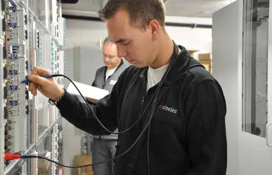
PublireportageCompany profile (publié dans les dossiers Vaud et Fribourg)
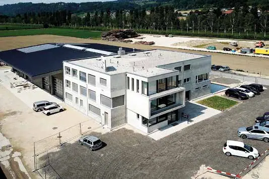
PublireportageCompany profile
Company profile
Company profile
 Interview
InterviewInterview mit Stefan Studer, Kantonsoberingenieur / Amtsvorsteher
Im Gespräch mit Stefan Oswald, Leiter Marktgebiet West
Interview mit Reto Wagner, Dipl. Geologe, Vorsitzender der Geschäftsleitung
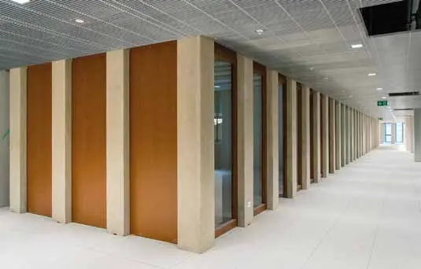
InterviewIm Gespräch mit Geschäftsleiter Adrian Röthlisberger
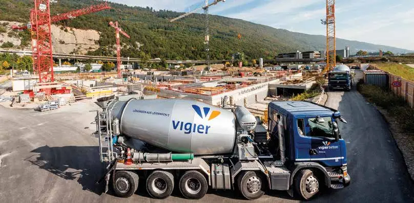
InterviewIm Gespräch mit Unternehmensleiter Bruno Müller
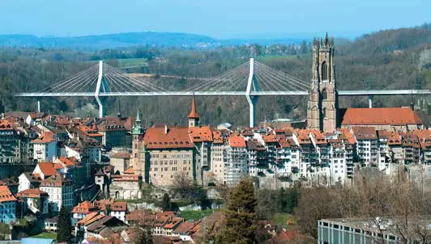
PublireportageCompany profile
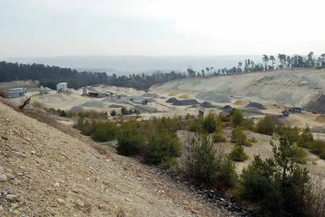
PublireportageCompany profile
Company profile
Spezialistin im Bereich Erdwärme (français et allemand)
 Interview
InterviewEntretien avec Nicolas Merlotti
 Publireportage
PublireportageCompany profile
Company profile
Company profile – Ticino
Company profile – Ticino
 Publireportage
Publireportage Publireportage
PublireportageBG Consulting Engineers – Building a sustainable living environment
Our passion, your safety
Constructive solutions for private individuals and professionals
For reliable and efficient electrical inspections
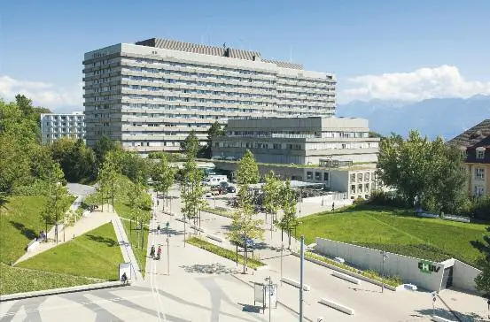
PublireportageYour engineering partner in French-speaking Switzerland
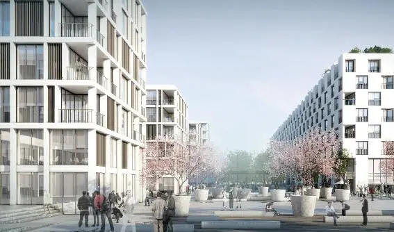
Publireportage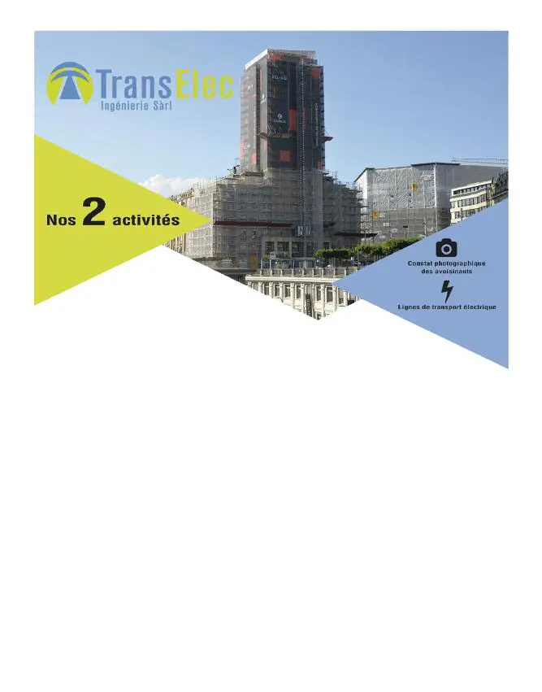
Publireportage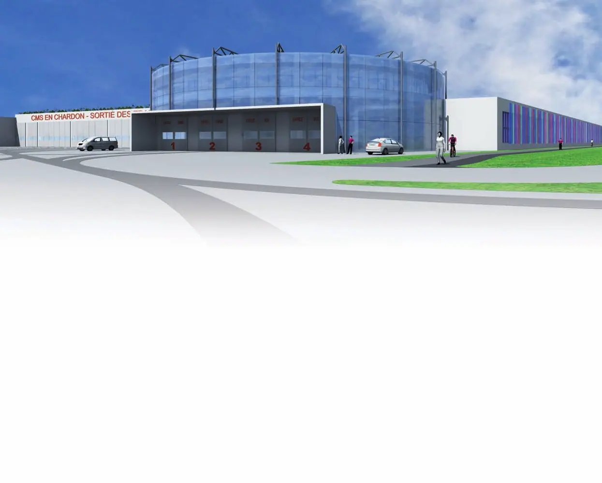
PublireportagePublireportage
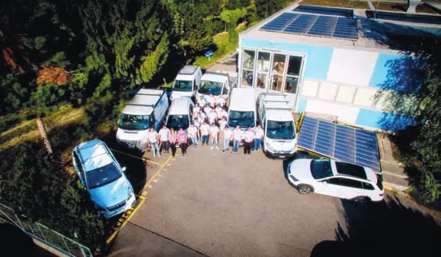
PublireportagePublireportage
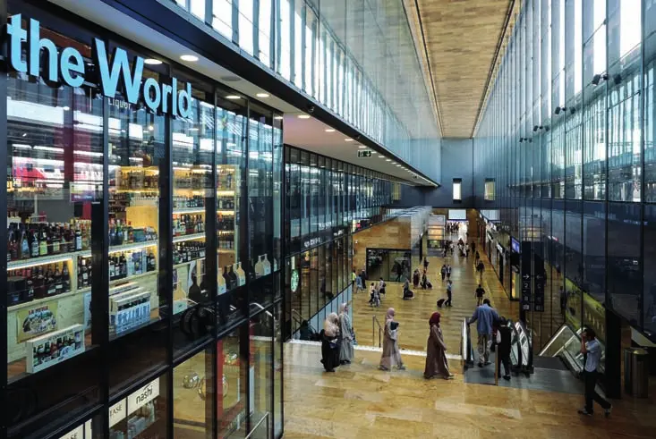
PublireportagePublireportage
L’association faîtière des constructeurs d’infrastructures
Interview de Mario Marti, Secrétaire général de l’usic
Interview mit Dr. Dieter Wepf, Präsident
La faîtière de l’économie suisse de la construction
 Dossier
DossierTravaux routiers et autoroutiers
DossierTravaux de réfection entre Vétroz et Uvrier
DossierRemise en état progressive de la route du col
DossierAssainissement de l’autoroute à travers l’agglomération de Neuchâtel
 Dossier
DossierAutomatisation de la ligne Bellinzone–Luino
DossierDeux minutes d’intervalle entre Wankdorf et Berne
DossierNouvelle liaison ferroviaire transfrontalière
DossierProgramme ZEB entre Berne et Thoune
 Dossier
DossierModernisation de la gare de Martigny
DossierVers la cadence au quart d’heure entre Coppet et Genève
DossierUne troisième voie sur l’axe du Saint-Gothard
 Interview
InterviewInterview mit Werner Kradolfer und Alex Veigl / Entretien avec Werner Kradolfer et Alex Veigl
 Publireportage
PublireportagePortrait par M. David Quesada, sous-directeur
 Interview
InterviewInterview mit Mitinhaber und Co-Geschäftsleiter Martin Diggelmann
 Publireportage
PublireportageSeit 65 Jahren auf sicheren Gleisen
 Publireportage
PublireportageIngénierie des structures, des infrastructures et planification générale
 Publireportage
PublireportageUne lecture détaillée du sous-sol pour les grands chantiers romands
 Publireportage
PublireportageUn bureau d’ingénieurs tessinois fête ses trente ans
PublireportageGéomètres du Ceneri et du second tube du Gothard
 Publireportage
PublireportageStatique, hydraulique, acoustique et trafic
Plus de 2000 projets environnementaux en Romandie
Béton, granulats et enrobés bitumineux
 Publireportage
Publireportagemawi, ingegneri civili e pianificatori
 Publireportage
PublireportageFondations spéciales et géotechnique
 Publireportage
PublireportageRevêtements routiers, étanchéité et génie civil à Lugano
Dispositifs routiers, parois antibruit et ouvrages métalliques
 Interview
InterviewExtensive geognostic characterisation for all types of terrain
PublireportageGénie parasismique, sismologie et vibrations
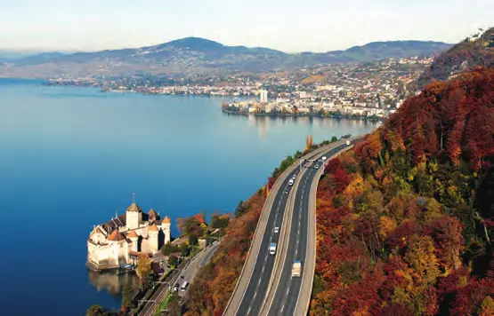
PublireportageEnvironnement, construction et énergie
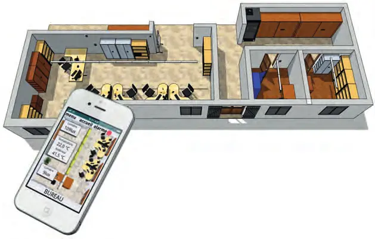
PublireportageGestion technique du bâtiment à Matran
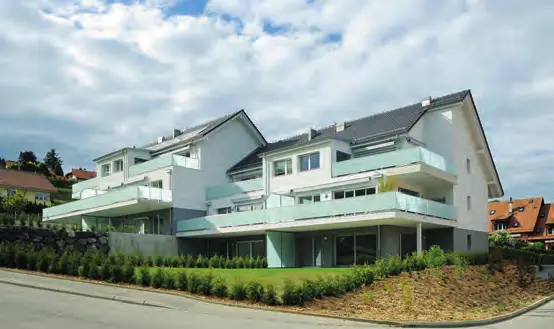
PublireportageImplenia Buildings Fribourg
Interview de Barbara Schwickert, directrice des travaux publics, de l'énergie et de l'environnement de la Ville de Bienne
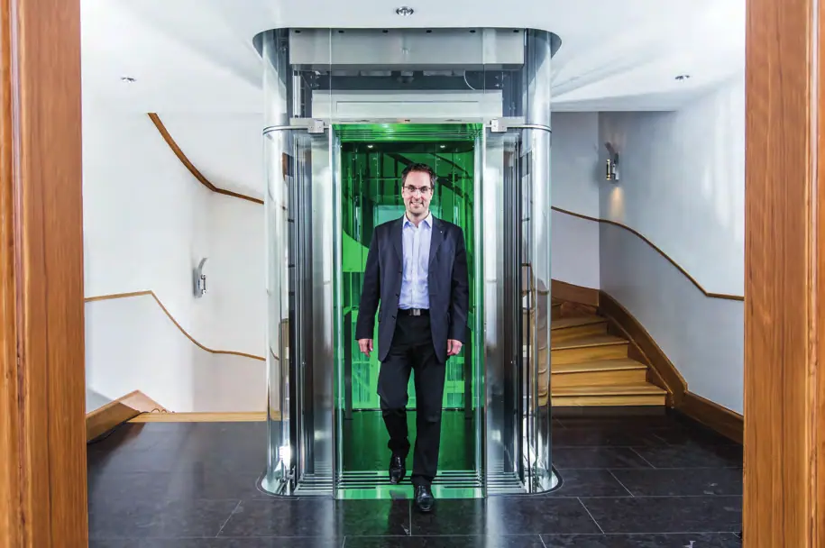
Interview« Unser Produkt verlangt Swiss Made und Swiss Know-how »
 Publireportage
Publireportage Publireportage
Publireportage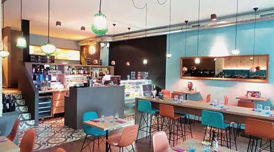
Publireportage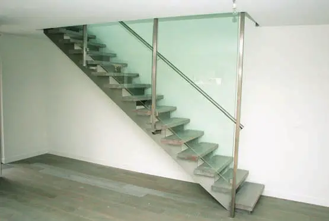
Publireportage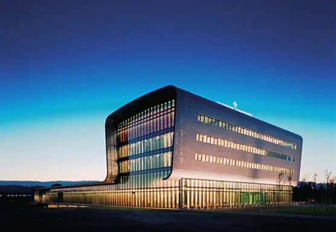
Publireportage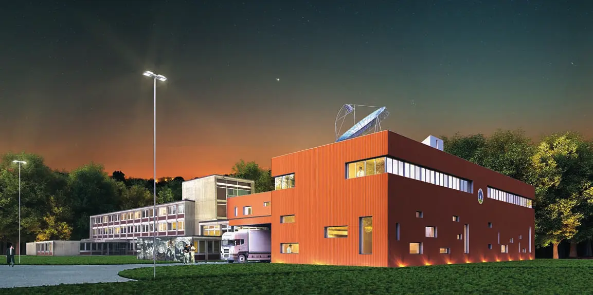
PublireportageEntretien avec M. Claude Uldry, conseiller municipal en charge des bâtiments, des finances, de l'informatique et de la population
 Publireportage
PublireportageFormer les cadres de la construction
 Interview
Interview60 ans et pionnier de l'« urban mining » (version anglaise incluse)
 Interview
InterviewLe Hard Turm Park à Zurich-Ouest (version anglaise incluse)
 Interview
InterviewPortes et portails (version française incluse)
 Publireportage
PublireportageLaboratoire indépendant d'essais de matériaux de construction
 Interview
InterviewHASTAG (Zürich) AG, gravier, béton et recyclage
 Interview
InterviewInterview de Georges Joliat, chef du service des travaux publics de la Ville de Sion
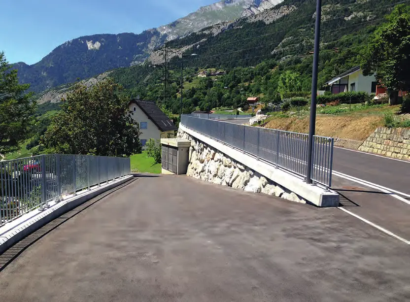
PublireportageGénie civil, bâtiment et aménagements à Sion
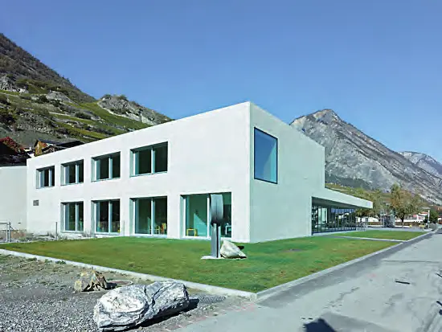
PublireportageBureau d'ingénieurs à Ayent et Sion
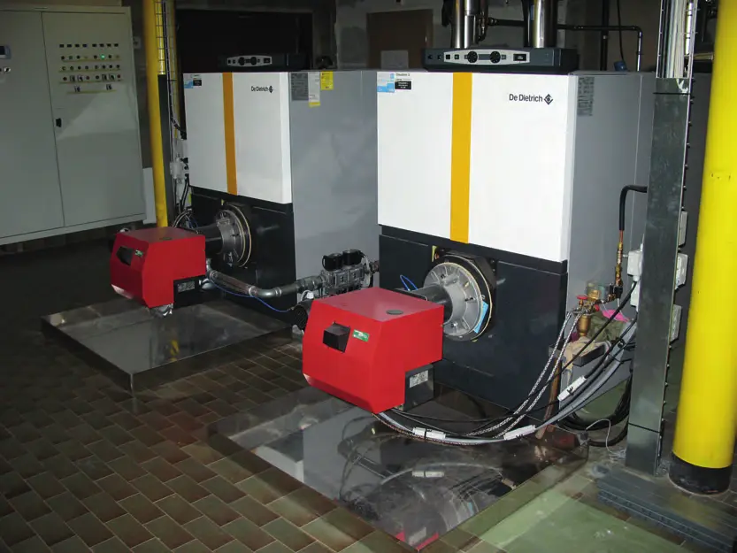
PublireportageChauffage, ventilation, climatisation – partenaire de Minergie
Installations électriques, ICT et BCT en Suisse romande
 Publireportage
PublireportageUne entreprise familiale sierroise depuis 1912
 Interview
InterviewInterview mit Hans-Peter Wyss, Stadtingenieur Bern / Office des ponts et chaussées de la ville de Berne – « Nous gérons l'espace public »
 Interview
InterviewBauinspektorat: Baubewilligungen, Baupolizei und Wohnraumschutz
Interview mit Kurt E. Wagner, VR-Delegierter und CEO, und Mirko Feller, Stv. CEO / Solutions globales dans les domaines de la construction, de l'environnement, de la mobilité et de l'énergie
Geschäftsleitung: R. Brinkmann, Dr. Ch. Meyer / GEOTEST SA – Géologie, géotechnique, géophysique, environnement
Im Gespräch mit Martin Kull, VR-Delegierter, CEO und Inhaber / Entretien avec Martin Kull, délégué du conseil d'administration, CEO et propriétaire
Fragen an Herrn Christoph Arpagaus, Vorsitzender der Geschäftsleitung / Itten+Brechbühl SA – Architectes et planification générale
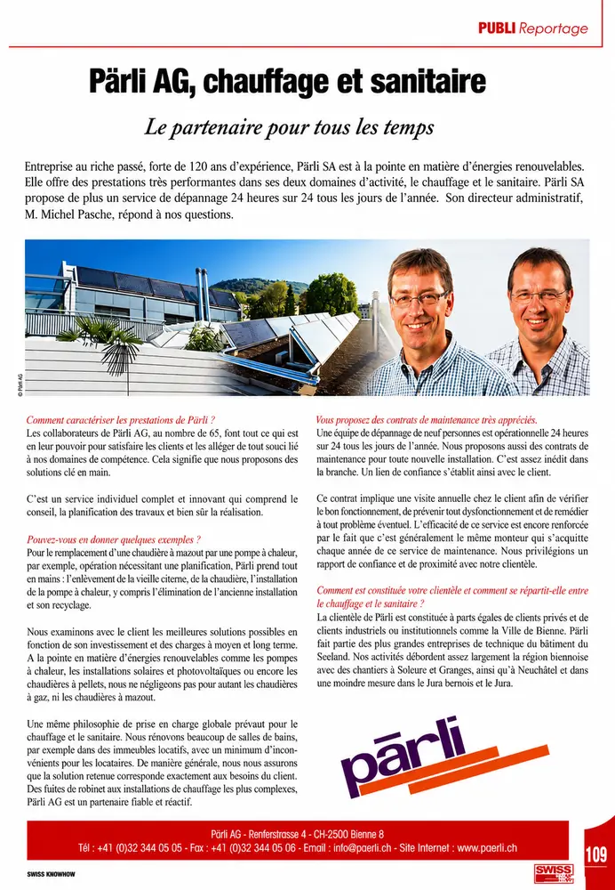
PublireportageEntretien avec M. Michel Pasche, directeur administratif
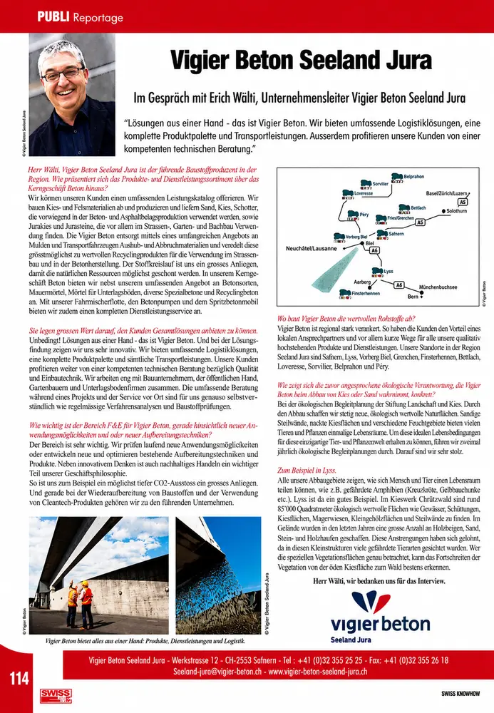
PublireportageIm Gespräch mit Erich Wälti, Unternehmensleiter / Entretien avec Erich Wälti, dirigeant de Vigier Beton Seeland Jura
 Interview
InterviewInterview mit Walter Wäschle, Mitinhaber und Christoph Schmid, Mitglied Geschäftsleitung
 Interview
InterviewInterview mit Dr. Josef Grob, Geschäftsleiter
 Interview
InterviewIm Gespräch mit VR-Präsident Heinz Eberhard
 Interview
InterviewIm Gespräch mit Dieter Flückiger, Dr. sc. techn., dipl. Bauing. ETH, Geschäftsleitung
 Interview
InterviewIm Gespräch mit Geschäftsführerin Stina Andersen
 Interview
InterviewInterview mit Martin Bachmann, Executive Vice President der Pöyry PLC und Verwaltungsratspräsident der Pöyry Schweiz AG
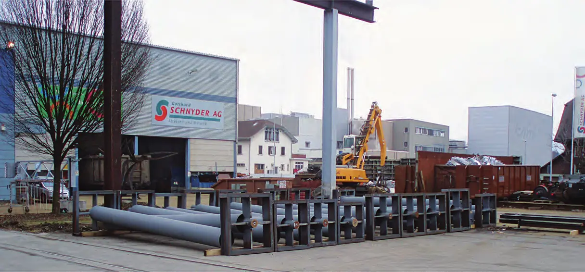
InterviewInterview mit Paul Horn, Geschäftsführer, Verkauf Schweiz
 Publireportage
PublireportageInstallations techniques du bâtiment
 Publireportage
PublireportageBureau d'ingénieurs à Locarno
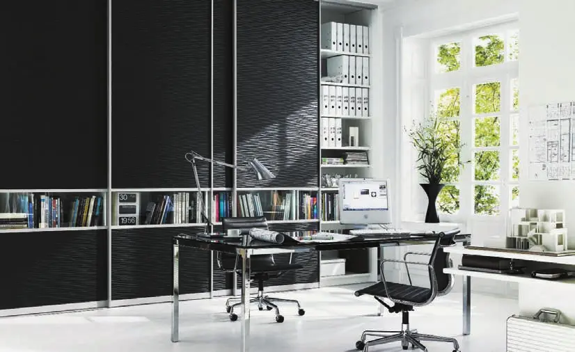
PublireportageCarpentry style and design – Fabrizio Wüthrich
Le groupe de construction Calderari à Rancate
Béton prêt à l'emploi dans le Mendrisiotto
 Interview
InterviewQuatre gros chantiers simultanés – avec M. F. Taillard, directeur général adjoint (version anglaise : The HUG gets a facelift)
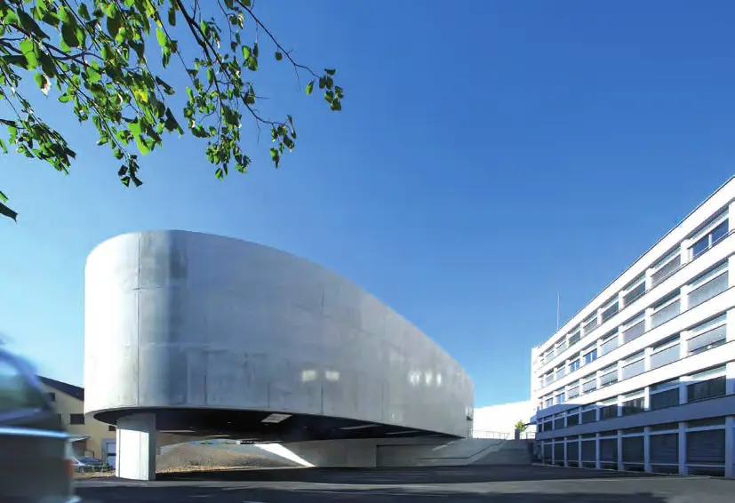
PublireportageIm Gespräch mit Klaus Schneider, Managing Director Keramik Laufen AG und Similor AG
PublireportageEntretien avec M. Juan Casanova, directeur
 Publireportage
PublireportagePrévention, extinction, évacuation et secours
Bureau d'architectes et développement immobilier
Travaux acrobatiques sur cordes
Bâtiment et génie civil
Ingénierie et conseil
Bureau d’ingénieurs civils
Installations techniques du bâtiment
Ingénierie technique du bâtiment et consulting
Bureau d’ingénierie civile
Bureau d'ingénieurs
Bâtiment et génie civil
Bureau d'architectes
Bureau d'architectes
Ingénieurs et géomètres
Ingénierie des installations sanitaires et apparentées
Maçonnerie, béton armé et travaux publics
Génie civil, bâtiment, terrassement et transport
Organisation faîtière de la construction

Ingénieurs géomètres – mensuration

Extraction de sables et graviers
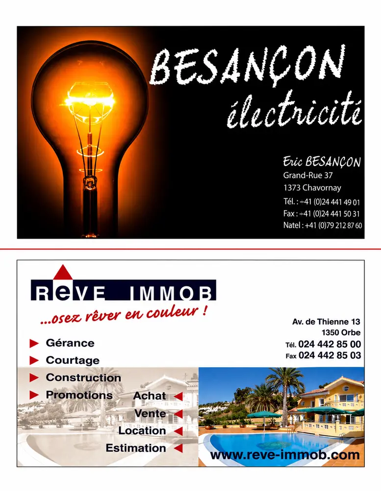
Installations électriques
Ingénierie électrique et optimisation énergétique
Ingénierie et conseil
Rénovation, gypserie-peinture

Entreprise de construction
Entreprise générale de bâtiment et génie civil
Béton prêt à l'emploi
Génie civil et bâtiment
Chemins de fer – projets d’infrastructure
Ingénieurs-conseils – construction bois et sécurité incendie
Contrôle des installations électriques
Maçonnerie et génie civil
Construction et entretien routiers
Bureau d'architectes et entreprise générale
Réseaux de fibre optique pour infrastructures routières
Conseil en ingénierie et environnement
Automobiles

Protection incendie et sécurité
Travaux acrobatiques et sur corde
Bureau d’ingénieurs civils (ponts, génie civil urbain)
Bureau d'ingénieurs civils
Génie civil, déconstruction, assainissement et recyclage
Conseil en environnement et santé dans le bâtiment

Bureau d’études en environnement
Entreprise générale de construction
Bureau d'ingénieurs civils
Contrôles et sécurité électriques
Ascenseurs sur mesure
Ingénierie, planification et conseil (infrastructures)
Ingénierie civile
Gestion technique et énergétique du bâtiment
Association de professionnels – énergies renouvelables
Bureau d’études en énergie et installations techniques
Technique du bâtiment et services énergétiques
Installations électriques, télématique et automation
Ingénierie routière et essais de matériaux
Construction de bâtiments à grande portée en bois
Chemins de fer – projets d’infrastructure
Bureau d'ingénieurs civils
Construction, entretien et logistique ferroviaires
Génie civil spécialisé – précontrainte et réparation d’ouvrages
Bâtiment, génie civil et ouvrages d’art
Plâtrerie, peinture et isolation
Chauffage, ventilation, climatisation et tuyauterie industrielle
Géologie, géotechnique, géophysique et environnement
Forages géothermiques et recherche d’eau
Granulats, béton frais et recyclage
Entreprise générale de l’énergie
Développement immobilier
Gravier, béton, recyclage et décharges
Entreprise générale
Hôpital universitaire
Portes, portails et motorisations
Développement immobilier et entreprise totale
Serrurerie et construction métallique
Menuiserie et agencement
Essais de matériaux, conseil en construction et analyses
Construction et entreprise générale
Association faîtière des constructeurs d’infrastructures
Architecture et planification générale
Matériaux de construction (ciment, gravier, béton)
Cimenterie (argile calcinée)
Bureau d'ingénieurs civils
Géologie appliquée et géotechnique
Céramique sanitaire et équipements de salle de bains
Infrastructures ferroviaires, routières et énergétiques
Serrurerie et constructions métalliques
Laboratoire de matériaux routiers
Construction (ponts, ouvrages souterrains, fondations spéciales)
Ingénieurs civils et planificateurs
Installations électriques, domotique et photovoltaïque
Ingénierie civile et planification générale
Plâtrerie-peinture
Ventilation et pompes à chaleur
Géologie de l’ingénieur et hydrogéologie
Administration fédérale – routes nationales
Construction métallique
Travaux spéciaux du sous-sol
Technique du bâtiment – chauffage et sanitaire

Non précisé
Géotechnique, hydrogéologie et diagnostic des polluants
Géophysique et études territoriales
Ingénierie et conseil

Bitumes et entretien des revêtements routiers
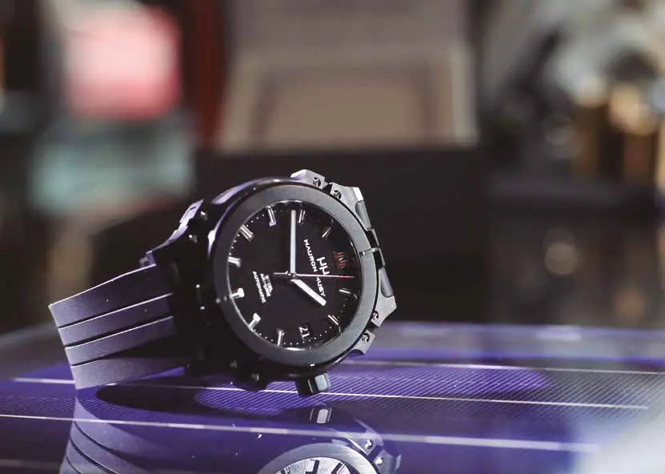
Électricité, télématique et photovoltaïque
Génie parasismique, sismologie et vibrations
Transport, matériaux de construction et services aux collectivités

Ingénierie de la gestion du trafic et de la mobilité
Menuiserie et agencement intérieur
Ingénierie civile et entreprise de construction
Réseaux câblés et génie civil
Bureau d'architectes
Chemins de fer – projets d’infrastructure
Construction métallique et tôlerie
École supérieure de la construction
Chemins de fer fédéraux – infrastructure ferroviaire

Administration cantonale – patrimoine immobilier
Bureau d'ingénieurs civils
Protection et sécurité incendie
Robinetterie sanitaire
Revêtements routiers, étanchéité, bâtiment et génie civil
Systèmes de construction mixte acier-béton
Ingénierie CVSE et sécurité
Entreprise générale, ingénierie et construction

Administration communale

Administration communale
Bureau d’ingénierie civile
Bureau d’ingénierie (statique, hydraulique, acoustique, trafic)
Bureau d’ingénierie civile
Installations électriques, ICT et BCT
Installations techniques du bâtiment et de l’industrie
Planification générale et direction de projets de construction
Administration cantonale – ponts et chaussées
Bureau d'ingénieurs civils
Entreprise générale de construction
Organisation patronale des bureaux d’ingénieurs
Transports, terrassement et services
Assainissement, vidange et curage
Béton, mortiers et granulats
Béton, granulats et recyclage de matériaux de construction
Commune
Administration communale
Association professionnelle et normalisation routière
Aucun résultat.
Grands travaux · 2026


Collectivités · 2018


Économie régionale · 2015


Économie régionale · 2013